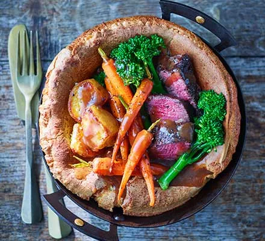

English Sunday Roast

Description
A Sunday roast or roast dinner is a traditional British meal that is typically served on Sunday, although can be consumed throughout the week, consisting of roasted meat, roast potatoes and accompaniments such as Yorkshire pudding, stuffing, gravy, and condiments such as apple sauce, mint sauce, or redcurrant jelly.
Ingredients
For the Yorkshire pudding
- 2 large eggs
- 70g plain flour
- 100ml whole milk
- rapeseed or sunflower oil
For the roast
- 1 fat steak
- rapeseed oil, for frying
- 1 large potato
- 2 carrots
- 4 stems long-stemmed brocoli
- 200-300ml gravy
Steps
- To make the batter, crack the eggs into a bowl or jug, then add the flour – it should make roughly the same quantity as the eggs. Whisk together until smooth. Gradually add the milk and carry on whisking until the mixture is lump-free. Season. Pour the batter into a jug, cover and chill for at least 30 mins and up to 24 hrs.
- Heat a dry frying pan. Brush the steak with oil and season it well, place in the pan and brown on each side, then remove from the pan and leave to cool completely. If you’re making ahead, wrap and chill until you need it, up to 24 hrs. Peel the potato and cut it into quarters, put them in a pan, cover with water and then bring to the boil. Once they’ve come to the boil, cook for 2 mins, then drain. Leave to dry completely and chill until needed.
- When you're ready to serve your Sunday lunch, heat oven to 230C/210C fan/gas 8. Drizzle a little oil into a 20cm frying pan with an ovenproof handle and put it in the oven. Heat a little oil in a small roasting tin on the same shelf. Tip the potatoes into the roasting tin, turn them over in the oil, add the carrots and the steak. Put the tin back in the oven. Pour the batter into the frying pan and put it back in the oven and cook for 25 mins.
- Check the Yorkshire pudding. It should have a good dark brown colour at the edges and feel firm and dry. If it’s ready, take it out and set aside. Remove the steak from the tin and rest until you’re ready to serve, wrapped loosely in foil to keep warm. Turn the potatoes and carrots and add the broccoli to the tin. Cook for a further 10 mins and if they look done, remove the veg, but put the potatoes back in the oven. Heat the gravy.
- Turn off the oven and put the Yorkshire back in to warm through. Slice the steak and tip any juices into the gravy. Serve the Yorkshire on a plate, filled with the meat, veg and potatoes and pour over the gravy.
Go back